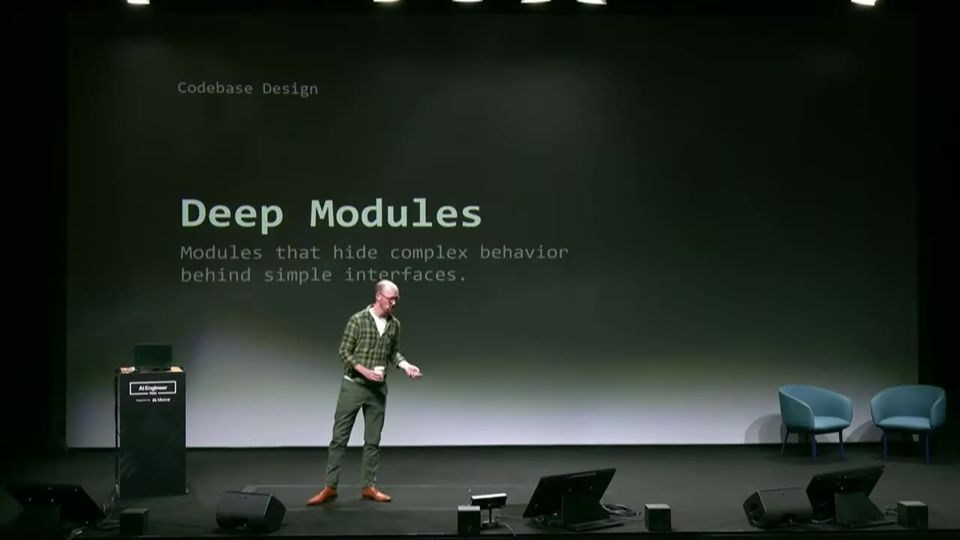
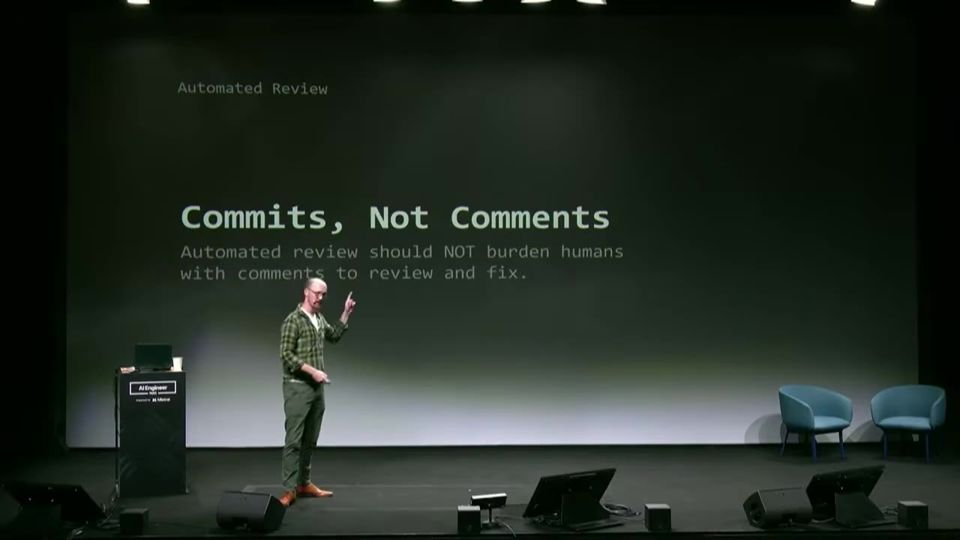
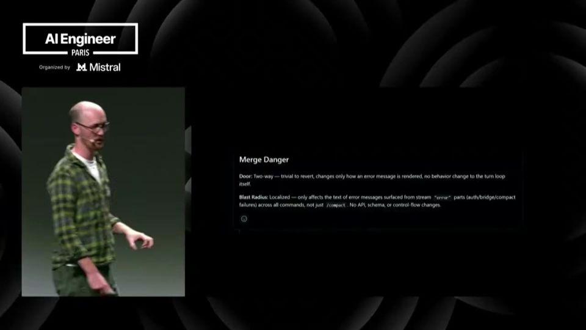

Fixing the PR Bottleneck
Para destravar o PR, ponha freios antes do revisor humano: checagens, revisão por agente e um PR que se explica sozinho.
Em 3 frases
Agentes abrem PRs em massa, mas não abrem PRs que valem a revisão, e o gargalo continua na revisão humana.
Matt Pocock propõe três freios em camadas: checagens automáticas, revisão automática feita por um agente separado do implementador e revisão humana focada no que importa.
Cada revisão humana deve alimentar uma retrospectiva que atualiza checagens e padrões de código, para que o mesmo comentário nunca seja escrito duas vezes.
Antes de ler
Testes podem mentir
CI verde não prova que o código está pronto. O agente escreve testes tautológicos (que repetem a implementação), testes presos à estrutura do código e testes com mocks que não conseguem falhar. Por isso a revisão automática e a humana servem como detectores de mentira das checagens.
05:27 Exemplo real de teste tautológico escrito por agente.
Módulos profundos geram testes melhores
Um módulo profundo esconde muita implementação atrás de uma interface pequena. Se o agente testa só pela interface, os testes dependem menos da estrutura interna. Desenhar bem o código reduz a chance de testes ruins.

Implementar sobrecarrega, revisar não
Na janela de contexto do implementador já cabem explorar, editar e depurar. Colocar padrões de código ali piora o resultado. O revisor roda em subagente com contexto próprio, lê um arquivo coding-standards.md e aplica os padrões. É um red-green-refactor com duas janelas de contexto.
11:43 O implementador já está cheio, então os padrões vão para o revisor.
Mais 2 ideias deste talk
O revisor comita, não comenta
Um agente que só comenta no PR cria mais trabalho para o humano. Pocock defende que o revisor automático faça commits com as correções e comente apenas quando tiver dúvida. Ele também recomenda montar a própria revisão em vez de terceirizar tudo, porque revisores genéricos geram falsos positivos.

PR bom mostra o perigo do merge e vira retro
O corpo do PR classifica a mudança como porta de mão única ou de mão dupla e indica o raio de impacto. Diagramas e pseudocódigo explicam o que muda. Depois, a skill retro analisa PRs e sessões e sugere novas checagens e padrões, para o processo melhorar a cada revisão.

Deep module (módulo profundo). Um módulo profundo é como um micro-ondas: você aperta um botão só, e toda a parte elétrica complicada fica escondida dentro da caixa.
- Todo programa é dividido em partes. Cada parte tem uma porta de entrada, a interface, que diz o que você pode pedir a ela.
- Um módulo profundo (deep module) tem uma interface pequena, com poucas funções, e muito trabalho escondido atrás dela. Um módulo raso tem muitas funções, e cada uma faz pouco.
- A ideia vem de John Ousterhout, no livro A Philosophy of Software Design. Quem usa o módulo recebe muito valor com uma chamada simples, o que Pocock chama de alavancagem (leverage).
- Quando o agente testa só pela interface pequena, o teste confere o resultado e ignora os detalhes internos. Assim ele quebra menos quando alguém reorganiza o código por dentro.
- Por isso Pocock obriga o agente a testar pela interface e usa uma skill que aponta onde aprofundar módulos, juntando funções rasas e duplicadas num módulo só, fácil de testar.
Ajuda saber antes: Módulo e interface, Teste automatizado, Teste preso à estrutura do código
O talk apresenta as skills do próprio Pocock e anuncia a versão 1.3, então há conflito de interesse e tom de pitch. Não há dados sobre quanto tempo de revisão as práticas economizam, só a experiência pessoal e exemplos escolhidos a dedo. A afirmação de que o modelo Opus 5 ficou viciado em testes tautológicos vem de observação informal. A classificação porta de mão única ou dupla depende do julgamento do autor do PR, e o talk não mostra como evitar erros nela.
O que fazer com isso
- Crie um arquivo coding-standards.md no seu repositório e faça um agente de revisão em subagente aplicá-lo, em vez de colocar tudo no arquivo global de instruções do implementador.
- Peça ao agente revisor que faça commits com as correções e comente só quando houver dúvida real.
- Inclua no corpo dos PRs uma linha de merge danger: porta de mão única ou dupla, mais o raio de impacto.
- Depois de cada revisão humana, anote o comentário repetido e transforme em checagem automática ou regra de padrão de código.